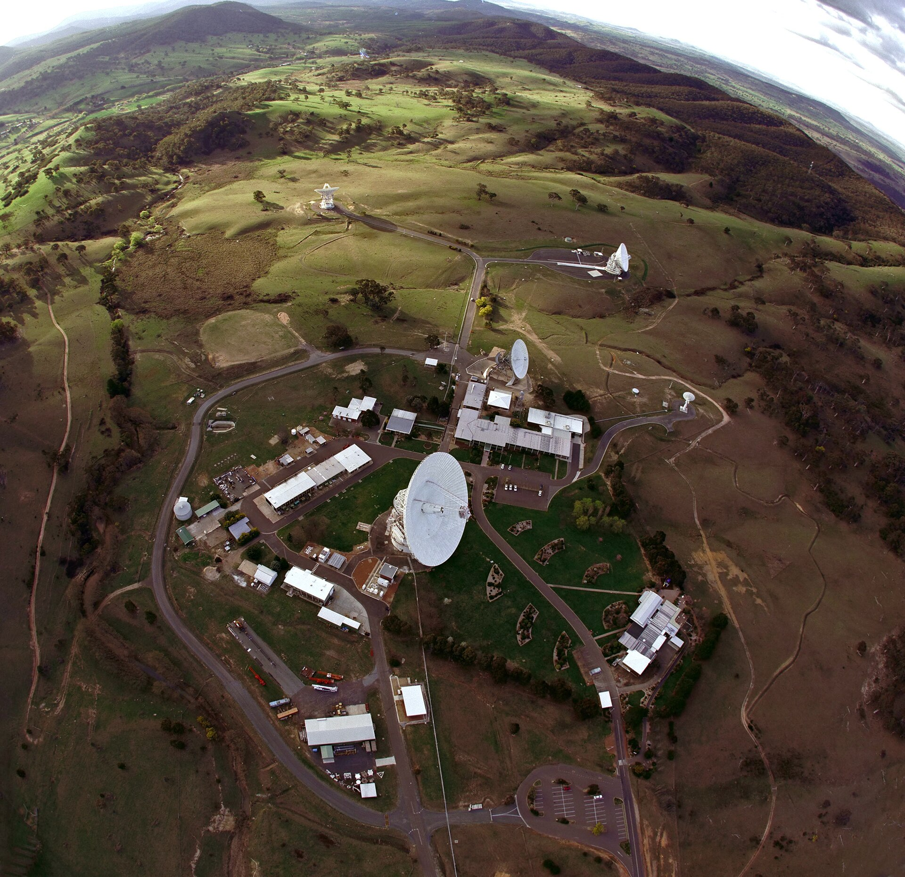

Pasadena – Wie die US-Raumfahrtbehörde NASA am Donnerstag in einer Mitteilung (Nr. 26-114) bekannt gab, haben Forschende am Jet Propulsion Laboratory (JPL) in Daten der Raumsonde Voyager 1 ein wiederkehrendes Muster identifiziert. Es handle sich um eine Folge schmalbandiger Pulse im Bereich von 10,4 Kilohertz, die sich im Abstand von rund 200 Sekunden wiederhole. Eine natürliche Ursache habe man «bisher nicht zuordnen können», heisst es in der Mitteilung.
Aufgefallen war das Muster zunächst in neu prozessierten Archivdaten des Plasmawellen-Instruments (PWS) aus dem Jahr 1979, als Voyager 1 am Planeten Jupiter vorbeiflog. Laut JPL tauche es in aktuellen Daten seit dem 14. September 2026 erneut auf, nun deutlich stärker. Nach 47 Jahren sei damit erstmals ein Vergleich möglich.
«Wir sind selbst überrascht.»
«Wir sind selbst überrascht», sagte Dr. Miriam Okafor-Lindqvist, Projektwissenschaftlerin am JPL, an einer Telefonkonferenz mit Medienvertretern. Man habe zunächst einen Fehler in der eigenen Software vermutet und die Daten von zwei unabhängigen Teams prüfen lassen. Beide seien zum gleichen Ergebnis gekommen. Von ausserirdischem Leben wolle sie ausdrücklich nicht sprechen. Die Pulse wiesen jedoch «eine Struktur auf, die wir aus natürlichen Plasmaprozessen nicht kennen».

Auswertung in Lugano
Für die weitere Analyse sei Rechenleistung im Petaflop-Bereich nötig, teilte die NASA mit. Ein Teil der Berechnungen soll am Nationalen Hochleistungsrechenzentrum der Schweiz (CSCS) in Lugano laufen. Lorenzo Bernasconi, Sprecher des Zentrums, bestätigte auf Anfrage eine «Anfrage für Rechenzeit im Rahmen bestehender Kooperationen». Zu Umfang und Dauer wollte er sich nicht äussern.
Voyager 1 wurde am 5. September 1977 gestartet und hat 2012 als erstes von Menschen gebautes Objekt den interstellaren Raum erreicht. Die Sonde ist derzeit rund 25,9 Milliarden Kilometer von der Erde entfernt. Ein Funksignal benötigt für diese Strecke fast genau einen Tag. Die Datenrate liegt bei 160 Bit pro Sekunde. Weil die Leistung der Radionuklidbatterien jedes Jahr um rund 4 Watt abnimmt, hat das JPL in den vergangenen Jahren mehrere Instrumente abgeschaltet. Das Plasmawellen-Instrument gehört zu den wenigen, die noch in Betrieb sind.
Diplomatische Reaktionen
Laut Dr. Henrik Saarinen vom Büro der Vereinten Nationen für Weltraumfragen (UNOOSA) in Wien haben sich bis Freitagmittag Vertreter von elf Staaten mit dem Wunsch gemeldet, «Kontakt aufzunehmen». Technisch gehe es dabei um ein kurzes Antwortsignal über das Deep Space Network, sagte Saarinen. «Im Wesentlichen wäre das ein Anstupsen.» Ein solches Vorgehen müsse international abgestimmt werden.
Die NASA verwies auf ein Protokoll der Internationalen Akademie für Astronautik aus dem Jahr 2010, wonach vor einer Antwort zunächst eine unabhängige Bestätigung erfolgen solle. Das Schweizer Aussendepartement (EDA) teilte mit, man verfolge die Entwicklung, eine Stellungnahme sei «zum jetzigen Zeitpunkt nicht vorgesehen».
Ob das Signal tatsächlich nicht natürlichen Ursprungs ist, ist offen. Ebenso unklar ist, aus welcher Richtung es stammt und ob eine Antwort überhaupt technisch sinnvoll wäre.
Mit Material der Nachrichtenagenturen.
Neue Eidgenössische Zeitung · Fiktiver Artikel, erstellt für ein Schulprojekt zur Medienkompetenz. Die NASA-Mitteilung, das Signal und alle zitierten Personen sind erfunden.
„Kontakt aufnehmen". Also wir finden nach 47 Jahren etwas und das Erste, was den Regierungen einfällt, ist: mal anstupsen und schauen, was passiert?? Hat niemand je einen Film gesehen? Das ist unverantwortlich!
Das Signal braucht einen Tag bis zur Sonde. Bis irgendwas zurückkommt, sind wir alle längst in Pension. Bitte etwas runterfahren.
Und das wurde 1979 schon gemessen und jetzt erst „entdeckt"? 47 Jahre haben die das unter Verschluss gehalten. Was wissen die sonst noch alles?
Ich kann seit heute Morgen nicht arbeiten. Mein Sohn (9) fragt, ob die Aliens jetzt kommen. Was soll ich ihm sagen? Ehrlich, ich habe selber Angst.
Plasmawellen bei 10 kHz sind im interstellaren Medium völlig normal. „Struktur, die wir nicht kennen" heisst erst mal nur: noch nicht verstanden. Warten wir die Publikation ab.
Genau, schön abwarten, bis es zu spät ist. Die Uni-Leute sind doch alle von denselben Geldgebern abhängig.
Und ausgerechnet unser Rechenzentrum in Lugano rechnet mit. Schön, dass man uns fragt, ob wir da mitmachen wollen. Wieder einmal wird über unsere Köpfe hinweg entschieden. Empörend.
Ich bin im selben Jahr geboren wie Voyager. Irgendwie berührt mich das. Egal, was es ist.
Kurze Frage an die Redaktion: Gibt es einen Link zur NASA-Mitteilung 26-114? Auf nasa.gov finde ich sie nicht.